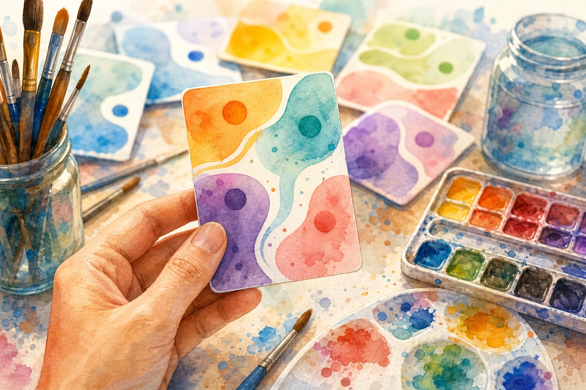

written by Eric J. Ma on 2026-10-23 | tags: prompt prompt card agent skill agent coding agent teaching learning documentation model card obsidian workflow

In this post, I introduce prompt cards: small cards, inspired by Model Cards, that teach one prompt I actually use. Each card numbers the parts of the prompt that matter, explains why each part matters when you hover over it, and names any skill or AGENTS.md instructions the prompt relies on. I explain why I think this works as a teaching tool for working with AI, walk through one card part by part, and show how you can make your own with my prompt-card skill. When you share a prompt, are you also sharing why it works?
People share prompts with me all the time, and I share mine too. But a prompt on its own is a strange thing to hand someone. It looks like a sentence, so it reads as if every word carries the same weight. In practice, a few words do almost all the work, and the person receiving the prompt has no way to tell which ones.
That becomes a problem the moment they try to use it for something slightly different. If you don't know which words do the work, you can't adapt the prompt. You either copy it word for word and hope, or you rewrite it and accidentally drop the part that made it work. Zamfirescu-Pereira and colleagues found a version of this problem in Why Johnny Can't Prompt, where people new to prompting struggled to understand why a prompt worked and tended to overgeneralize from what they saw.
Skills make the problem even harder. Installing an agent skill isn't enough to get the most out of it. A skill also needs to be invoked in a certain way, and usually only its author knows what that way of prompting is. I wrote about a related problem in Agent skills are also human skills, where a skill carries its author's tools, file layout, and way of working. The prompt that triggers the skill has the same problem in miniature.
It clicked when I realized I lacked an artifact that could help me teach the "why" behind my prompt's turn of phrase and choice of words.
That's why I started making prompt cards. I think a card teaches people to work with AI better than a bare prompt or a skill does, because it shows them which words do the work and what the prompt depends on.
A prompt card is a small HTML card that teaches one prompt, with gaps where you put in your own details. It shows the prompt with its most important parts numbered and color-coded. When you hover over a numbered part, a note pops up explaining why that part matters. When the prompt depends on a skill or AGENTS.md instructions, an "Interacts with" section below the prompt names them. A one-line footer gives the version and date.
Here's the first one I made, for the prompt I use to ingest a source into my Obsidian vault:
The idea comes from Model Cards. In Model Cards for Model Reporting, Margaret Mitchell and colleagues proposed that a trained machine learning model should ship with a short document, one to two pages, describing what it's for, how it was evaluated, and where it shouldn't be used. The general idea stuck with me more than any specific Model Card did: an artifact should ship with its own documentation, and I applied that idea to prompts. A prompt card is a short document that travels with the prompt and tells you what you need to know to use it well.
The first card came out of writing my post on the four-pillar Obsidian knowledge wiki. I wanted to show readers the ingest prompt I use, and a plain code block didn't explain why the prompt could be so short.
After drafting this post, I found that Caut, Zenebe, Rouillard, and Sumpter had already brought Model Cards to prompts. In What You Prompt Is What You Get, they proposed prompt cards for documenting the prompt pipelines used in research, covering things like model details, intended use, context, prompt architecture, ethics, and caveats. Their cards are longer and aimed at transparency and reproducibility. I built mine to be short and to teach, so each one marks which parts you fill in and which you keep, explains in hover notes why specific words matter, and names any skill or AGENTS.md instructions the prompt depends on. I've kept the name for mine because both are cards for prompts, just written for different readers.
Model Cards are documentation, but I think of a prompt card as a teaching tool first and documentation second. I'd make one whenever I need to give another person a prompt they can use.
When I write a prompt that works, I know which words matter, but that knowledge is tacit and doesn't show up in the text. Making a prompt card forces me to point at those words and number them. In the ingest card, for example, the word "Ingest" is highlighted. It looks like an ordinary verb, but it's what tells the agent to file the source in my vault instead of just chatting about it.
Simon Willison does something similar in prose. In the annotated prompts chapter of his Agentic Engineering Patterns guide, he walks through a real prompt piece by piece and explains why each phrase is there. He notes, for example, that "Compile gifsicle to WASM" is doing a lot of work.
The highlights come in two kinds. Some are blanks, like <url/file>, and the reader swaps in their own value. Others are fixed words, like "Ingest", that the reader should keep because they're what trigger the right behavior. The text that isn't highlighted is just glue. Seeing those three kinds of text side by side teaches the reader where they have room to adapt and where they don't.
With a list of tips at the top of a page, you have to remember the reasoning until you reach the part it applies to. On a prompt card, I attach the reason to the words themselves. You hover over the part you're unsure about and the note appears right there. I've kept the notes to a sentence or two each: what the part does, and what goes wrong without it. Other people have attached explanations this way in older work, like explainshell, which attaches an explanation to each part of a shell command, and Bret Victor's Explorable Explanations, which puts context in front of you at the moment you're reading.
For anything with more than a couple of steps, I've kept the steps off the card and packaged them as an agent skill, and the card teaches the short prompt that triggers the skill. That split makes the prompt easier to learn. The reader only has to learn a one-line prompt and what each part of it does, while the skill holds the procedure. They can read the skill later if they want the details, but they don't need to in order to get started.
That split means a short prompt only works because something else supplies the steps, usually a skill or a section in AGENTS.md. When people share a bare prompt, that dependency disappears, and the prompt mysteriously fails for the next person. The "Interacts with" section names the dependency and says what it supplies, so the reader knows what they need to set up before the prompt will behave the same way for them. I've written before about teaching your coding agent with AGENTS.md, and a prompt card is the other half of that, because it teaches the human what the agent has already been taught.
Prompt cards are new to me, and I've decided they're a digital artifact only. I've kept each one brief enough to fit at the bottom of a blog section or inside a note, so a person can have it open on screen while they practice the prompt.
I'll walk through one card part by part. This is the card for the prompt I use to build a landing page for my Obsidian vault:
In the header, you'll find a title, a small "prompt card" label, and a "Copy blank template" button that copies the prompt as plain text, blanks and all. The title names the job the prompt does, so you can find the card again when you need it.
Next comes the template, which is the prompt itself, exactly as I type it. This one has three numbered parts, and three feels about right. Fewer might mean the prompt doesn't need a card, and more would start to bury the parts that matter. Just below the prompt, a one-line hint tells you to hover or tab to a highlight to see why it matters.
Part 1, "landing page", is a fixed phrase. These are the words that point my agent at the obsidian-landing-page skill, so it follows the skill's steps instead of improvising. This part stays as is.
Part 2, <name of vault>, is a blank. It tells the agent which folder to look at, so the counts on the page come from your actual notes. This is the part you fill in.
Part 3, <look or palette>, is an optional blank. You can name a mood or a few colors, or leave it out and let the page follow your Obsidian theme. The hover note says it's optional, which is something the bare prompt could never tell you.
The "Interacts with" section explains why such a short prompt works. The obsidian-landing-page skill walks the agent through eight steps, and the page itself runs on the Dataview plugin with JavaScript queries turned on. The chips name both, and they offer AGENTS.md as the fallback for people who don't use skills.
At the bottom, the footer reads "prompt card · v0.1" and a date. Prompts and skills change, and the version tells you whether the card you're looking at matches the skill you have installed.
I packaged the whole process as a prompt-card skill in my public skills repository. You can install it with the skills CLI:
npx skills add ericmjl/skills
And of course, it comes with its own prompt card:
The prompt-card skill only needs the prompt itself. You can also give it the skill or AGENTS.md instructions the prompt uses, and your own explanation of what you mean by the key words. If your agent didn't help you shape the prompt, the skill has it interview you about your intent first, so the hover notes say what you meant.
Your agent works out from context where the card goes. A blog post gets a standalone HTML card with a copy button. An Obsidian note gets markup you paste into the note plus a CSS snippet, because Obsidian strips scripts.
The skill also tells your agent how to style the card, and the final look stays up to you. If your site already has its own widget styles, the skill tells your agent to match them, and otherwise to start from a default style. Because the card is just HTML, CSS, and a little JavaScript, you can ask your agent to restyle it any way you want, and a modern coding agent is very good at that kind of work.
When your prompt depends on a skill or AGENTS.md instructions, the prompt-card skill has your agent read the actual instructions before writing any hover note. That keeps the card honest. A note that claims those instructions do something they don't is worse than no note at all, because it teaches the reader the wrong thing.
I'd also suggest one rule of my own, which is to make cards only for prompts you actually use. If you use a prompt yourself, you've already tested it, and the reasons in the hover notes are ones you've actually run into.
Beyond that rule, making my first few cards mostly taught me to pay attention to whether my intents are properly communicated.
I can imagine a few cases where a card isn't the right tool. I'd skip the card for a one-off prompt you'll never use again, and for a prompt so simple that none of its words carry special weight.
A card also can't stand in for the procedure itself. As with the landing-page card, a long series of steps belongs in a skill or in AGENTS.md, and the card should point there. A card that tries to spell out every step stops being brief, and the reader loses track of which parts matter.
A card is only as accurate as the instructions behind it, so when the skill changes, the card could go stale. That's why each card carries a version, and why I'd update the card whenever I update the skill it depends on.
A card teaches the prompt, while checking what comes back is still on you. You need to know what a good result looks like and verify the agent's work. The card gets you to a good first attempt, and practice and review take it from there.
So far, I haven't run into a limit with my own cards. One more I can imagine is that people outgrow a card once the prompt becomes second nature. I'm not sure that will happen, but it seems plausible.
When I hand someone a prompt, I want them to leave with more than a string to paste. I want them to know which words matter, why they matter, and what the prompt depends on, so they can adapt it to their own work. A prompt card is my attempt to package all of that into something small enough to read at a glance.
For the Learn Anything retreat, one of the things I'm cooking up is a collection of prompts and agent skills that attendees can walk away with and use. Ethan Mollick made the case for collections like this in Now is the time for grimoires, asking people with expertise to share the prompts they've tested. I'd like prompt cards to be one way of sharing them.
The next time you want to teach another person how to work with an agent to get something done, make a card for that prompt. If you do, I'd love to see it!
@article{
ericmjl-2026-prompt-cards-teach-the-why-behind-the-words,
author = {Eric J. Ma},
title = {Prompt cards teach the why behind the words},
year = {2026},
month = {10},
day = {23},
howpublished = {\url{https://ericmjl.github.io}},
journal = {Eric J. Ma's Blog},
url = {https://ericmjl.github.io/blog/2026/10/23/prompt-cards-teach-the-why-behind-the-words},
}
I send out a newsletter with tips and tools for data scientists. Come check it out at Substack.
# TODO(eric): learn how to learn anything. feb 2027.
If you would like to sponsor the coffee that goes into making my posts, please consider GitHub Sponsors!